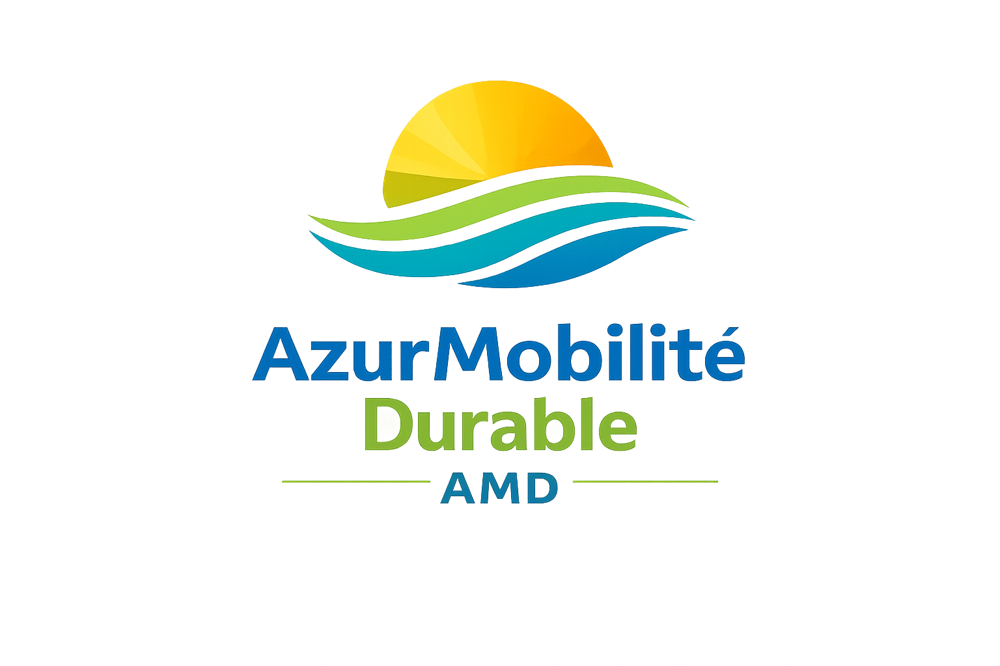
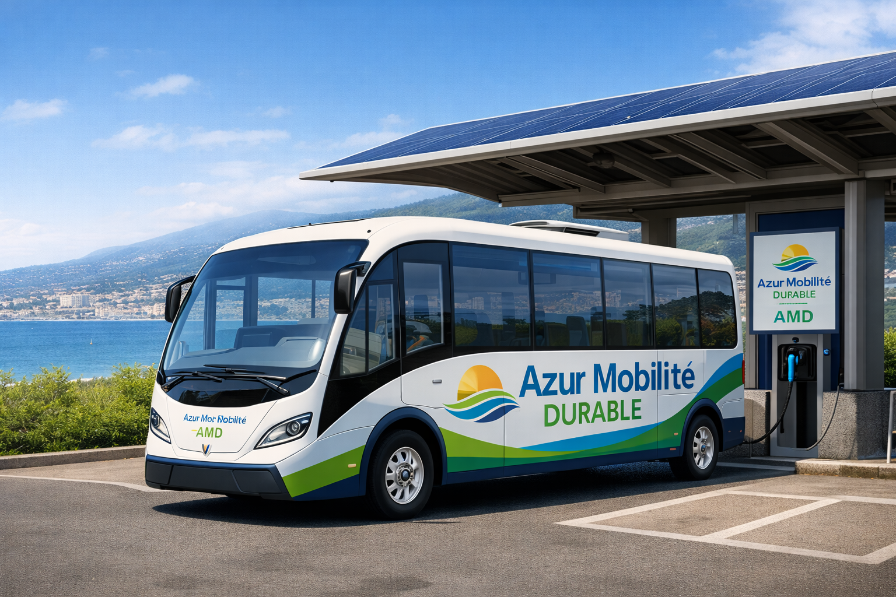
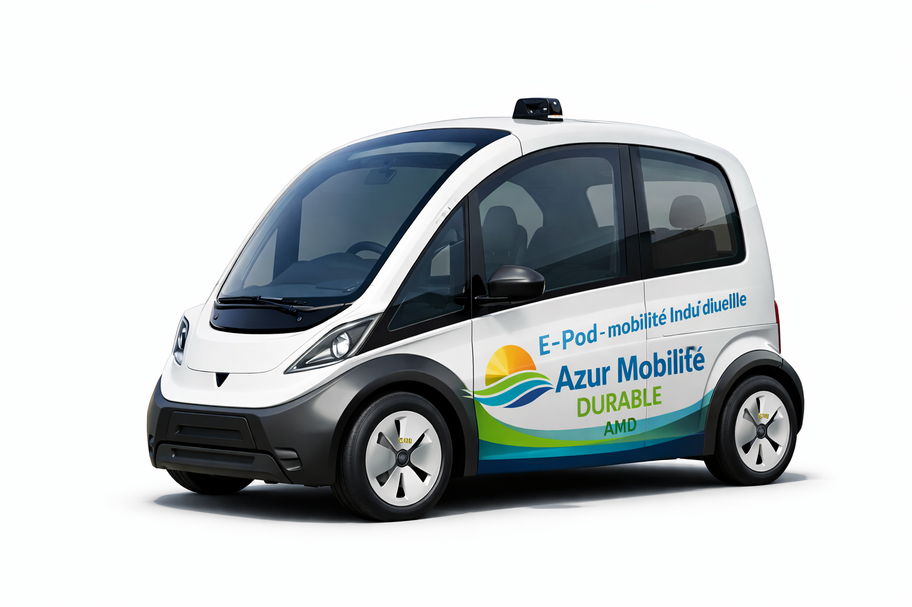
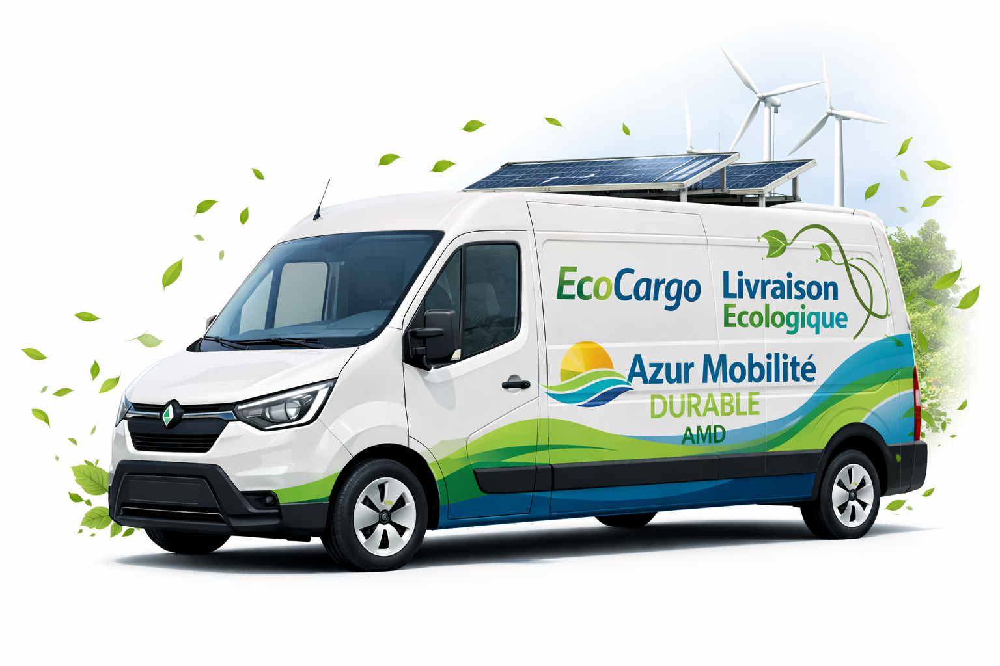

Étude des transports non polluants : création de la société AzurMobilité Durable (AMD)
K
Contexte et mission
AzurMobilité Durable (AMD) est une Société Publique Locale (SPL), détenue intégralement par la Métropole Nice Côte d’Azur. En tant qu’entreprise publique, elle s’inscrit dans une logique de production non marchande : les usagers paient un prix pour le service, mais ce prix reste inférieur au coût réel de production. Le déficit éventuel est pris en charge par la collectivité, car l’objectif principal n’est pas la maximisation du profit, mais la satisfaction de l’intérêt général, notamment la mobilité pour tous, la réduction de la pollution et l’amélioration de la qualité de vie urbaine.
Contexte économique
Le projet AzurMobilité Durable (AMD) s’inscrit dans un contexte économique marqué par les limites du modèle de croissance fondé sur la voiture individuelle. À Nice, l’augmentation du trafic automobile génère des externalités négatives importantes : pollution atmosphérique, congestion urbaine, nuisances sonores et hausse des dépenses de santé publique. Ces coûts sociaux ne sont pas pris en compte par le marché, ce qui justifie l’intervention de la puissance publique.
Dans ce contexte, la Métropole Nice Côte d’Azur met en œuvre une politique économique de mobilité durable visant à corriger ces défaillances du marché. La création d’AzurMobilité Durable répond à un objectif de croissance durable : maintenir l’activité économique et l’attractivité du territoire tout en réduisant l’impact environnemental des transports. Le transport devient ainsi un levier essentiel de développement économique local.
En facilitant les déplacements des travailleurs, des étudiants et des touristes, AMD soutient la production, l’emploi et la consommation locale. Elle agit comme un stabilisateur économique territorial, en réduisant la dépendance des ménages à la voiture individuelle et en protégeant leur pouvoir d’achat face à la hausse des coûts de l’énergie. Le contexte économique justifie donc pleinement la création d’une entreprise publique dédiée aux transports non polluants.
Rôle de la puissance publique et justification économique
La création d’AzurMobilité Durable s’inscrit dans le rôle économique de la puissance publique. Le marché, laissé seul, ne prend pas en compte les coûts sociaux liés à la pollution, à la congestion urbaine et aux nuisances sonores. Ces externalités négatives constituent une défaillance du marché, qui justifie l’intervention de la collectivité.
En créant une Société Publique Locale dédiée aux transports non polluants, la Métropole Nice Côte d’Azur agit comme régulateur économique. Elle corrige les déséquilibres du marché et oriente les comportements des usagers vers des modes de transport plus durables, dans une logique d’intérêt général et de bien collectif.
Présentation globale
- Nom : AzurMobilité Durable (AMD)
- Statut : Société Publique Locale (SPL)
- Création : 2026
- Propriétaire : Métropole Nice Côte d’Azur
- Siège social : Quartier Éco-Vallée, Nice
- Effectif : 420 salariés
- Spécialisation : mobilité non polluante, innovation technologique, énergie renouvelable
AzurMobilité Durable est une société de transport public innovante, conçue pour répondre aux enjeux économiques, environnementaux et sociaux de la mobilité à Nice. Elle vise à réduire durablement l’usage de la voiture individuelle en proposant des solutions propres, accessibles et efficaces.
Objectifs stratégiques
- Faire de Nice une référence européenne en mobilité durable
- Réduire fortement les émissions liées aux transports
- Diminuer la congestion automobile
- Développer un modèle public reproductible
Logique économique : une production non marchande
AzurMobilité Durable s’inscrit dans une logique de production non marchande. Les usagers participent au financement du service par le paiement d’un prix, mais ce prix reste volontairement inférieur au coût réel de production. Le déficit est pris en charge par la collectivité, conformément aux principes du service public.
Contrairement à une entreprise privée fonctionnant selon une logique marchande, AMD ne vise pas la maximisation du profit. Son objectif est de garantir l’accès à la mobilité pour tous, de réduire les inégalités territoriales et de limiter l’impact environnemental des transports, même si cela implique une rentabilité financière limitée.
Structure des services proposés
EcoShuttle solaire
Minibus électriques et autonomes, équipés de dispositifs de recharge photovoltaïque, assurant des trajets collectifs propres dans les zones urbaines et périurbaines.

E-bike UltraCharge
Vélos électriques en libre-service, adaptés au relief niçois, avec stations de recharge alimentées par énergie renouvelable.

E-Pod – mobilité individuelle
Capsules électriques autonomes destinées aux trajets courts, disponibles à la demande, silencieuses et sans émission.

EcoCargo
Service de livraison urbaine écologique destiné aux commerçants et artisans, permettant de réduire les flux de véhicules thermiques en centre-ville.

Modèle économique et facteurs de production
Le fonctionnement d’AzurMobilité Durable repose sur la mobilisation des facteurs de production. Le facteur travail correspond aux salariés employés (conducteurs, techniciens, ingénieurs, agents d’exploitation), tandis que le facteur capital regroupe les véhicules, les stations de recharge, les infrastructures numériques et les dépôts financés par la collectivité.
Le modèle économique illustre une logique de croissance durable, conciliant développement économique, protection de l’environnement et progrès social.
Revenus estimés
- Abonnements et titres de transport
- Partenariats et services associés
- Valorisation énergétique et innovation
Dépenses annuelles estimées
Les dépenses correspondent aux coûts de production du service public : salaires, maintenance, énergie, exploitation et renouvellement du capital productif.
Financement public et redistribution
Le financement d’AzurMobilité Durable repose principalement sur des ressources publiques, complétées par les recettes issues des usagers. Ce mode de financement collectif permet de mutualiser les coûts de production du service et de garantir son accessibilité à l’ensemble de la population.
Les ressources mobilisées sont redistribuées sous forme de salaires versés aux employés, de commandes passées aux entreprises locales et d’investissements publics dans les infrastructures de transport. AMD participe ainsi à la redistribution des richesses et au dynamisme économique du territoire.
Valeur ajoutée et PIB : même sans recherche de profit, AzurMobilité Durable crée de la valeur ajoutée par la production de services, l’emploi de salariés et les investissements publics. Cette valeur ajoutée contribue au PIB local et national.
Impact écologique et externalités
Le développement d’AzurMobilité Durable permet de réduire les externalités négatives liées au transport automobile, telles que la pollution atmosphérique, le bruit et la congestion urbaine. Ces externalités positives justifient l’intervention et le financement public.
Conclusion économique
AzurMobilité Durable illustre parfaitement le rôle économique d’une entreprise publique dans un contexte de transition écologique. En corrigeant les externalités négatives liées à la voiture individuelle, AMD contribue à une croissance durable, conciliant développement économique, progrès social et protection de l’environnement.
Même sans rechercher le profit, la société crée de la valeur ajoutée par la production de services de transport, l’emploi de salariés et les investissements publics réalisés. Cette valeur ajoutée contribue au PIB local et national et soutient l’activité économique de la Métropole Nice Côte d’Azur. AMD apparaît ainsi comme un outil central de politique économique territoriale au service de l’intérêt général.